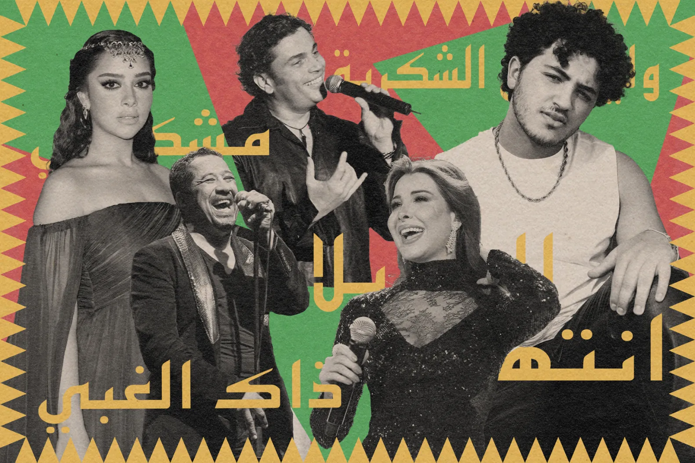
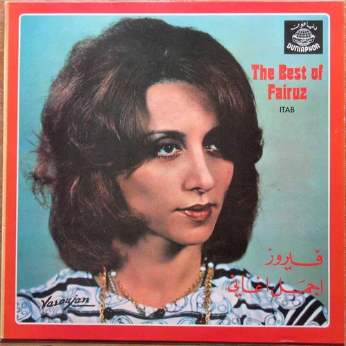

موسيقى
The oldest language. The one that needs no translation. From the Arabic maqam to the Western symphony, from Fairouz to Miles Davis — music is what happens when emotion becomes too large for words.
Music · Essay · Issue I
The Arabic musical mode is not just a scale. It is a temperament, a stance toward the world, a way of feeling before speaking. Each maqam carries an emotional universe within it. To play in Maqam Rast is to speak of longing. To play in Maqam Hijaz is to speak of the desert and the sacred. This essay asks: what does Arab music know about the human condition that philosophy has not yet said?
Read Essay →Essay
Essay
Criticism
Essay
Every culture hears the world differently. Three musical traditions, three ways of organizing sound into meaning — and all of them, underneath, saying the same thing.
Built on quarter-tones the Western scale cannot hear, the Arabic maqam is a modal system that carries entire emotional landscapes within its intervals. Each mode is a world. Each performance is a conversation between the musician and the invisible.
"The maqam does not describe an emotion. It creates the condition for it." — Nour Hadidi
From Bach's mathematical counterpoint to Debussy's impressionist shimmer, European classical music built an architecture of sound that sought to represent the universe itself. It is music as grand ambition — and as profound beauty.
"Music is the arithmetic of sounds as optics is the geometry of light." — Claude Debussy
Born from the pain and resilience of Black Americans, jazz and blues gave the 20th century its emotional vocabulary. Rock took that vocabulary and made it electric. These are musics of survival, rebellion, and the unbearable need to be heard.
"The blues is an art of ambiguity." — Ralph Ellison
Voice in Focus
She has been singing since 1950. Through the Lebanese Civil War, through assassinations and bombings, through the slow dismantling of everything her songs once promised — Fairouz kept singing. She is the only Lebanese institution that has never been destroyed.
To understand Fairouz is to understand something essential about the Arab relationship to beauty: that it is not an escape from suffering, but a way of surviving it with dignity. Her voice does not deny the pain. It holds it, transforms it, and gives it back to the listener as something bearable.
"She is not just a singer. She is the proof that we were once capable of something beautiful."
Maqam · Music SectionShe sang when Beirut burned. She sang when it was rebuilt. She will, we suspect, still be singing when the rest of us have run out of words.

"Music gives a soul to the universe, wings to the mind, flight to the imagination, and life to everything."
الموسيقى هي لغة الروح — الوحيدة التي لا تحتاج إلى ترجمة.
Plato · adapted
Essay
The Arabic musical mode is not just a scale. It is a temperament, a stance toward the world, a way of feeling before speaking.
Essay
She sang when Beirut burned. She sang when it was rebuilt. What does it mean to be the conscience of an entire people?
Essay
Miles Davis said he was influenced by Arab music. John Coltrane studied the maqam. The conversation between jazz and Arabic music was never a coincidence.
Criticism
She would sing the same verse thirty times, each time differently. On why Arab music treats repetition not as failure but as deepening.
Essay
From Shakira's zaghrouta to the quarter-tone scales in Western pop production — the Arab musical tradition has been borrowed from for decades without credit.
Essay
John Cage said silence is music. Arab musical tradition says the space between notes is where the emotion lives. Both are right. This essay listens to the pause.